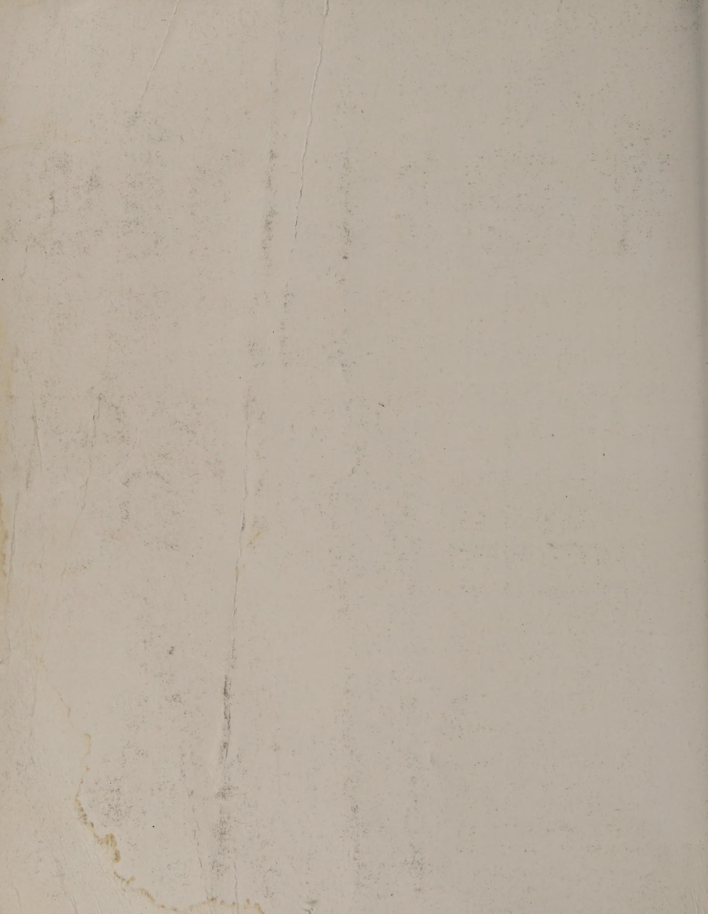
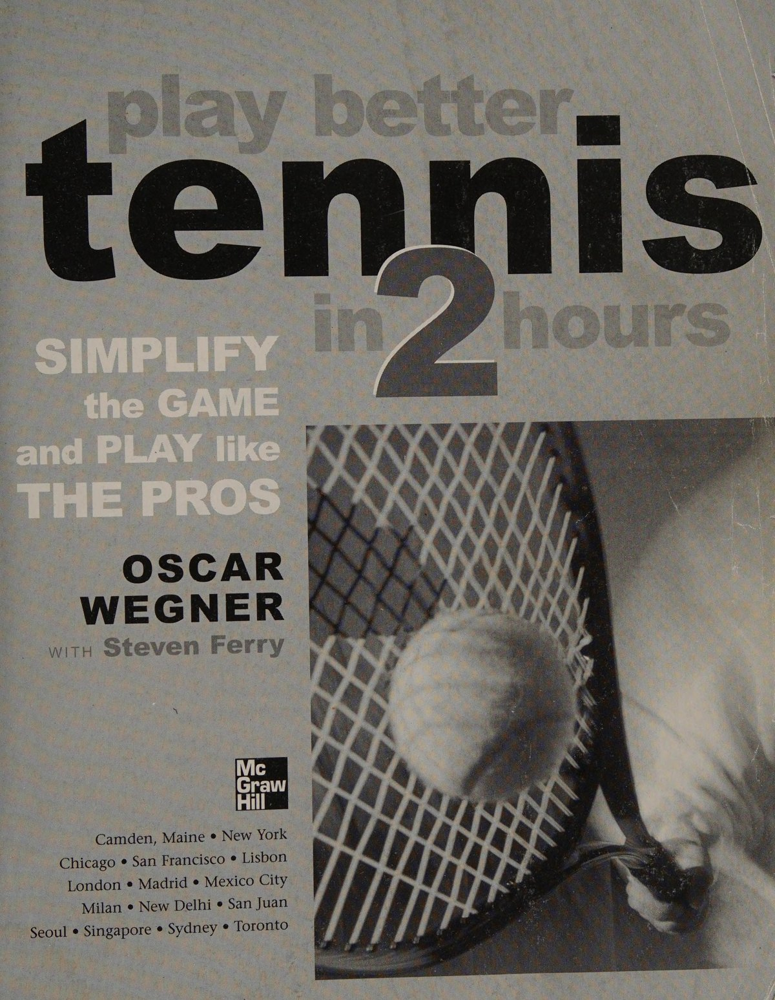
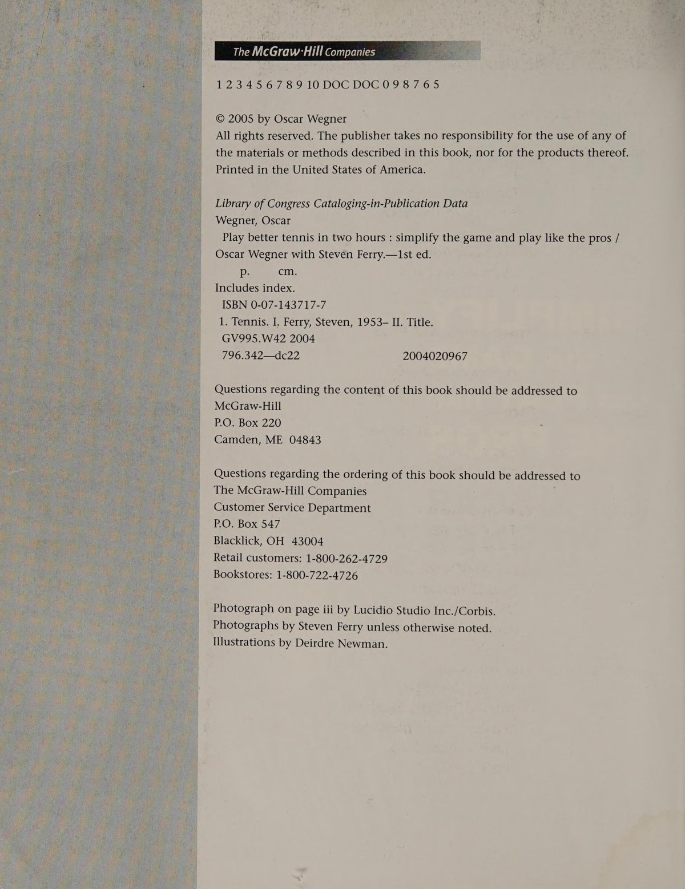
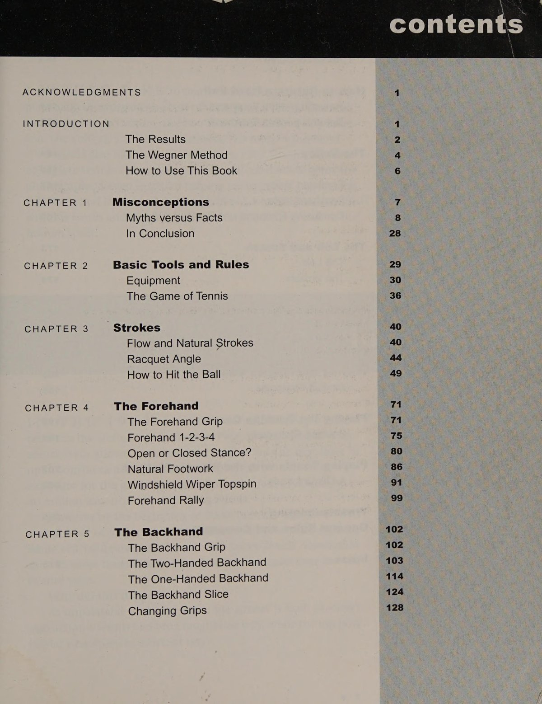
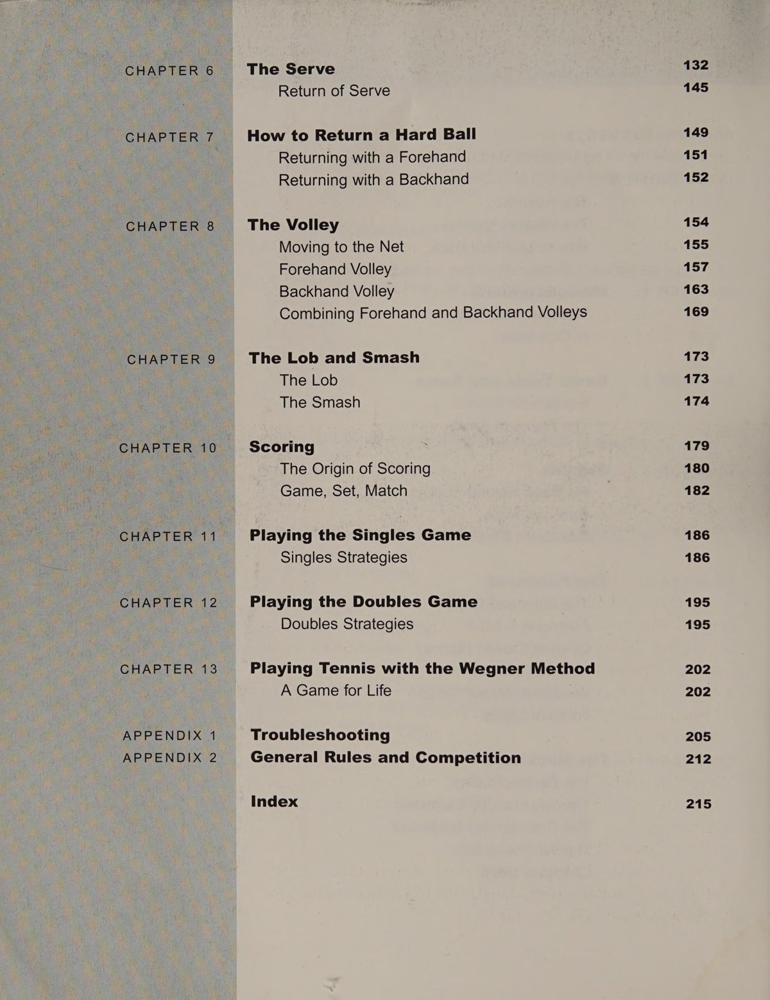
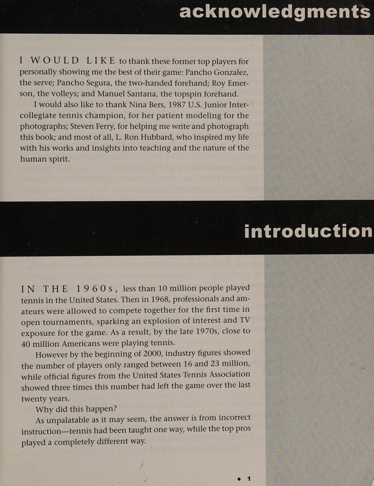
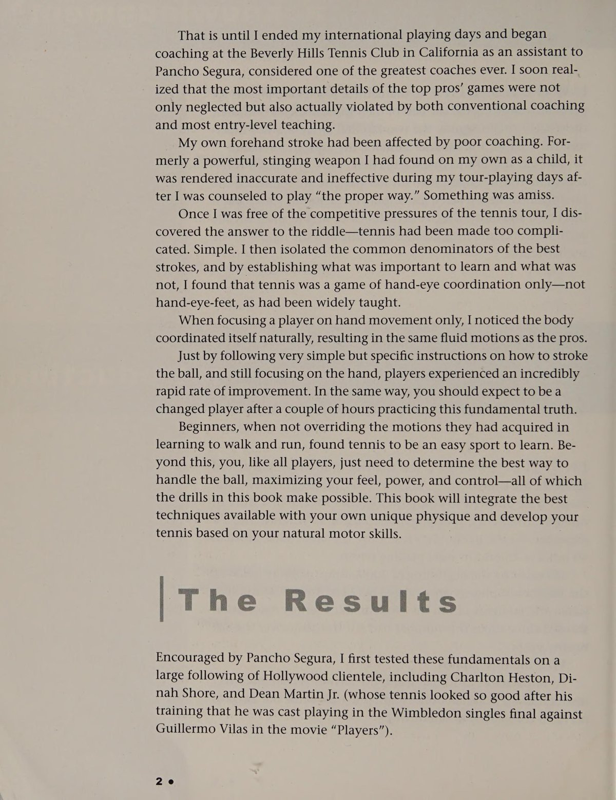
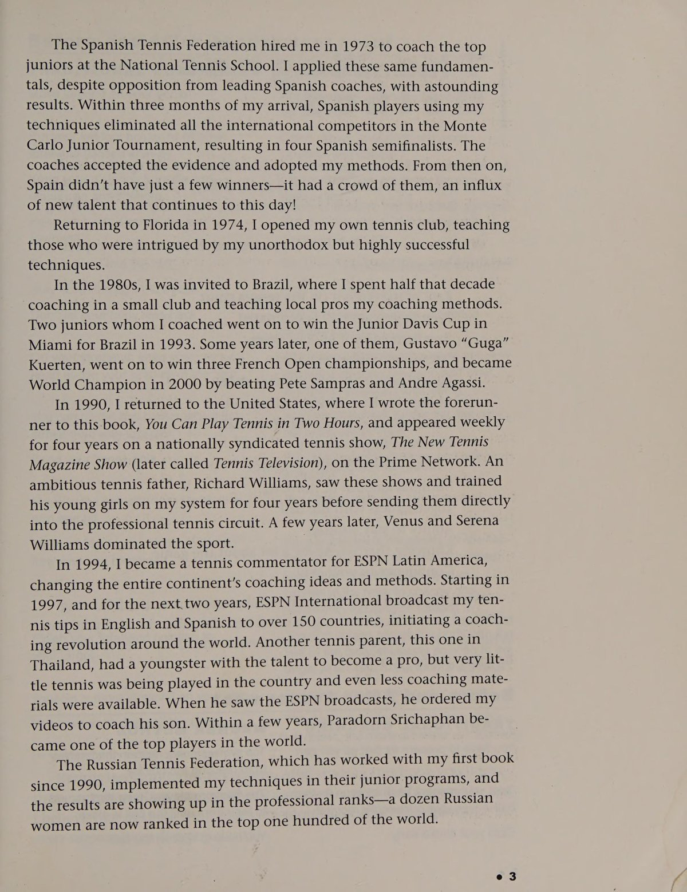

Phần 1: Phương Pháp Wegner & Cuộc Cách Mạng Lật Đổ Các Giáo Điều Cổ Hủ
Oscar Wegner được làng quần vợt quốc tế vinh danh là một trong những bộ óc huấn luyện mang tính cách mạng và có tầm nhìn xa nhất lịch sử. Ông chính là người tiên phong khám phá và truyền bá các nguyên lý quần vợt hiện đại từ những năm 1980, giúp huyền thoại 11 danh hiệu Grand Slam Bjorn Borg tìm lại cảm giác bóng đỉnh cao, đồng thời phương pháp của ông đã được áp dụng trong quá trình đào tạo những tài năng hàng đầu như Gustavo Kuerten hay chị em nhà Williams.
Trong tác phẩm kinh điển Play Better Tennis in 2 Hours, Oscar Wegner đã dũng cảm vạch trần hàng loạt giáo điều lỗi thời đã kìm hãm hàng triệu người chơi phong trào trong suốt nhiều thập kỷ, mở ra một con đường tiếp cận tự nhiên, trực giác và giải phóng toàn bộ tiềm năng cơ thể.
1. Lật Đổ Những Ngộ Nhận Truyền Thống Cốt Tử (Myths vs Facts)
Phương pháp huấn luyện truyền thống thường dạy học viên những động tác máy móc, cứng nhắc khiến người chơi cảm thấy căng thẳng và vụng về. Wegner chỉ rõ sự thật đằng sau những lời khuyên tai hại phổ biến nhất:
- Ngộ Nhận 1: "Xoay Người Sang Bên & Bước Chân Chéo Vào Bóng" (Turn Sideways): Giáo điều này bắt bạn quay nghiêng 90 độ so với lưới và bước chân đóng. Sự thật là: Các tay vợt chuyên nghiệp hàng đầu thế giới dành hơn 80% thời gian thi đấu ở thế đứng mở (open stance) đối diện với lưới. Thế đứng mở cho phép hai mắt quan sát bóng với tầm nhìn 3D hoàn hảo và giải phóng toàn bộ khớp hông để tạo lực xoay bộc phát.
- Ngộ Nhận 2: "Mở Vợt Ra Sau Thật Sớm & Thật Rộng" (Early Big Backswing): Việc kéo vợt ra sau quá sớm và đứng chờ bóng sẽ làm đông cứng dòng chảy vận động (freezing the kinetic flow). Các tay vợt hàng đầu chỉ đưa vợt ra sau khi bóng đã nảy lên từ mặt sân của mình, thực hiện một vòng lượn vợt ngắn gọn và liên tục (compact continuous loop).
- Ngộ Nhận 3: "Đánh Từ Thấp Lên Cao & Kết Thúc Cao Qua Vai" (Low to High Finish): Động tác đẩy bóng lên cao kiểu cũ chỉ tạo ra những cú đánh yếu ớt và dễ bay ra ngoài sân. Các nhà vô địch hiện đại sử dụng động tác "cần gạt nước" (windshield wiper), quất mặt vợt cuộn qua đỉnh bóng và kết thúc ngang ngực hoặc hông đối diện.
- Ngộ Nhận 4: "Khóa Cổ Tay Thật Chặt" (Lock the Wrist): Khóa cứng cổ tay sẽ bóp nghẹt độ linh hoạt và triệt tiêu toàn bộ tốc độ đầu vợt. Cổ tay cần phải hoàn toàn thư giãn và dẻo dai như một chiếc roi da để tích lũy và giải phóng năng lượng vào tâm bóng.

2. Dòng Chảy Chuyển Động Tự Nhiên (Flow and Natural Strokes)
Bí quyết của những tay vợt vĩ đại là họ không bao giờ cố gắng gồng mình để đánh bóng. Toàn bộ chuỗi chuyển động của họ diễn ra như một dòng nước êm ả nhưng ẩn chứa sức mạnh ghê gớm:
- Khái Niệm Cảm Nhận Bóng (Feel the Ball): Thay vì cố gắng đập thật mạnh vào bóng, hãy tập trung vào cảm giác quả bóng lún sâu vào mặt dây cước trong một phần nghìn giây. Khi bạn cảm nhận được sức nặng và độ đàn hồi của quả bóng, bạn có thể dễ dàng điều khiển quỹ đạo bay của nó đến bất kỳ điểm nào trên sân.
- Góc Mặt Vợt Tự Nhiên (Natural Racquet Angle): Khi bạn vung vợt về phía trước, mặt vợt phải hơi hướng về phía mục tiêu mong muốn. Bạn không cần phải cố gò ép cổ tay vào một góc kỳ quặc; bàn tay con người có khả năng tự điều chỉnh vi mô kỳ diệu nếu tâm trí không bị phân tâm bởi các quy tắc cứng nhắc.
3. Làm Chủ Cuốn Sách Trong 2 Giờ Thực Hành
Oscar Wegner khẳng định rằng quần vợt là môn thể thao vô cùng đơn giản nếu bạn học đúng cách ngay từ đầu:
- Học Từng Bước Đơn Lẻ: Đọc một phần ngắn, bước ra sân thực hành bài tập cô lập trong 15 đến 20 phút cho đến khi cảm giác tự nhiên xuất hiện, sau đó mới chuyển sang phần tiếp theo.
- Tập Luyện Với Tốc Độ Chậm: Đừng bao giờ bắt đầu bằng những quả bóng bắn nhanh. Hãy để bạn tập tung bóng nhẹ nhàng ở cự ly gần để bạn làm quen với cảm giác đón bóng và thả lỏng cơ thể.
Phần 2: Cơ Học Cú Thuận Tay Hiện Đại: Công Thức 1-2-3-4 & Tuyệt Kỹ Cần Gạt Nước
Cú thuận tay hiện đại (modern forehand) là một trong những phát kiến vĩ đại nhất làm thay đổi hoàn toàn diện mạo của môn quần vợt chuyên nghiệp. Không còn những bước chân bước chéo cứng nhắc hay những cú đánh đẩy bóng thẳng tưng thiếu độ xoáy, các tay vợt hàng đầu thế giới thi triển cú thuận tay với một sự thanh thoát, tốc độ đầu vợt bùng nổ và khả năng kiểm soát bóng tuyệt đối.
Phần này hướng dẫn công thức 4 bước Forehand 1-2-3-4 trứ danh của Oscar Wegner, giải mã cơ học thế đứng mở (open stance) và kỹ thuật tạo độ xoáy cuộn cần gạt nước (windshield wiper topspin).
1. Công Thức Đột Phá: Forehand 1-2-3-4
Oscar Wegner đã đơn giản hóa cú thuận tay thành một chuỗi hành động bản năng mà bất kỳ ai cũng có thể thực hiện thành thạo chỉ sau vài phút thực hành:
- Bước 1: Tìm Bóng Bằng Bàn Tay (Find the Ball): Ngay khi nhận diện bóng bay sang phía thuận tay, nâng cây vợt lên ngang ngực với hai tay, hướng ngực và cơ thể về phía quả bóng đang bay tới. Bạn không cần quay ngoắt người sang bên; hãy giữ mắt và thân người hướng thẳng vào bóng.
- Bước 2: Hạ Đầu Vợt Dưới Tầm Bóng (Drop Below the Ball): Khi quả bóng chạm đất nảy lên trên phần sân của bạn, hãy để đầu vợt tự nhiên rơi xuống thấp hơn tầm bay của bóng khoảng 15 đến 20 cm. Đây là bước tích lũy thế năng để tạo góc vung từ dưới lên trên.
- Bước 3: Đón Bóng Ở Phía Trước Thân Người (Meet in Front): Vung vợt về phía trước đón quả bóng ở vị trí phía trước hông trước. Hãy cảm nhận lòng bàn tay thuận của bạn như đang áp thẳng vào tâm quả bóng để truyền toàn bộ năng lượng của cơ thể vào cú đánh.
- Bước 4: Cuộn Mặt Vợt Qua Đỉnh Bóng (Roll Over): Ngay tại khoảnh khắc tiếp xúc, cẳng tay và cổ tay xoay cuộn mặt vợt qua đỉnh quả bóng giống như một chiếc cần gạt nước ô tô. Cây vợt kết thúc tự nhiên ngang ngực hoặc vòng qua bắp tay đối diện thay vì bị giật ngược lên trời.

2. Thế Đứng Mở: Chìa Khóa Của Tốc Độ & Thăng Bằng (Open Stance Dynamics)

Tại sao thế đứng mở lại vượt trội hoàn toàn so với thế đứng đóng truyền thống?
- Tầm Nhìn 3D Tuyệt Đối: Khi bạn đứng ở tư thế mở đối diện với lưới, cả hai mắt đều nhìn thẳng vào quả bóng, giúp bạn phán đoán cự ly, tốc độ và độ xoáy chính xác gấp đôi so với việc phải ngoái đầu nhìn qua vai trong thế đứng đóng.
- Giải Phóng Toàn Bộ Khớp Hông: Thế đứng mở cho phép khớp hông xoay tự do 180 độ. Khi bạn nạp lực vào chân ngoài và xoay hông bung ra trước, lực ly tâm sẽ truyền tải thẳng lên cánh tay và phóng cây vợt đi với vận tốc khủng khiếp.
- Phục Hồi Vị Trí Ngay Trong Tích Tắc: Sau khi hoàn thành cú đánh ở thế đứng mở, bàn chân ngoài của bạn đã ở vị trí sẵn sàng đạp mạnh xuống mặt sân để đẩy cơ thể trở lại trung tâm kiểm soát, nhanh hơn thế đứng đóng từ 1 đến 2 bước chạy quý giá.

3. Bộ Chân Di Chuyển Tự Nhiên (Natural Footwork Drill)
Wegner kêu gọi người chơi hãy từ bỏ những bài tập đếm bước chân máy móc:
- Di Chuyển Như Đang Đi Bộ Bình Thường: Khi bóng bay tới, hãy chạy tự nhiên về phía quả bóng như cách bạn chạy đến bắt một đứa trẻ. Không cần suy nghĩ chân nào bước trước, chân nào bước sau. Đôi chân con người có trí thông minh bẩm sinh để tự căn chỉnh khoảng cách hoàn hảo.
- Bài Tập Đôi Công Thuận Tay Tự Do (Forehand Rally): Đứng cách bạn tập 8 mét, thực hiện các pha chuyền bóng thuận tay nhẹ nhàng, tập trung vào cảm giác đón bóng êm ái và nhịp thở thả lỏng.
Phần 3: Cú Trái Tay Hiện Đại, Kỹ Thuật Giao Bóng & Trả Giao Bản Năng
Rất nhiều người chơi phong trào xem cú trái tay (backhand) là một gánh nặng tâm lý và thường tìm cách né tránh nó trong suốt trận đấu. Tuy nhiên, theo Oscar Wegner, cú trái tay thực chất là một cú đánh vô cùng tự nhiên và vững chắc nếu bạn áp dụng đúng nguyên lý chuyển động của cơ thể. Tương tự như vậy, cú giao bóng không cần phải là một chuỗi hành động gồng sức phức tạp, mà chỉ đơn giản là một chuyển động ném bóng tự do được lặp lại một cách duyên dáng.
Phần này phân tích cơ chế cú trái hai tay và một tay hiện đại, kỹ thuật cắt bóng mượt mà, cùng phương pháp giao bóng và trả giao bóng theo trực giác.
1. Cú Trái Hai Tay & Một Tay Theo Phong Cách Wegner
Cú trái tay hiện đại mang lại sự ổn định và độ tin cậy tuyệt đối:
- Cú Trái Hai Tay (Two-Handed Backhand): Hãy xem cú trái hai tay như một cú thuận tay của cánh tay không thuận. Tay trái (đối với người thuận tay phải) nắm ở phần trên cán vợt và thực hiện toàn bộ công việc đẩy bóng và cuộn xoáy qua đỉnh bóng. Tay phải chỉ đóng vai trò giữ thăng bằng và làm trục xoay. Khi tay trái làm chủ cú đánh, bạn sẽ có được uy lực và độ ổn định không thua kém gì cú thuận tay.
- Cú Trái Một Tay (One-Handed Backhand): Để thực hiện cú trái một tay topspin chuẩn xác, bạn cần đưa cánh tay vung ra xa phía trước cơ thể. Đừng cố gắng giật vợt lên quá sớm; hãy để mặt vợt tiếp xúc bóng và đẩy xuyên qua bóng theo hướng mục tiêu trước khi vươn cao lên trời.
- Cú Cắt Trái Tay Tự Nhiên (Natural Backhand Slice): Khác với các cú chặt bóng thô bạo kiểu cũ, cú slice của Wegner là một chuyển động lướt êm ái. Mặt vợt hơi mở nhẹ, di chuyển từ tầm ngang vai lướt ngang qua đáy quả bóng và tiếp tục đẩy thẳng ra phía trước, tạo ra quỹ đạo bóng chuồi sát mặt lưới mà không bị bay bổng lên cao.

2. Cú Giao Bóng Tự Nhiên Như Ném Bóng (The Natural Serve)

Nhiều người chơi biến cú giao bóng thành một bài tập thể hình nặng nhọc với những điểm dừng giật cục. Wegner đưa cú giao bóng trở về với bản chất nguyên thủy của nó:
- Chuyển Động Ném Bóng Tự Do (The Throwing Motion): Cơ thể con người sinh ra đã có khả năng ném một hòn đá hoặc quả bóng chày đi rất xa một cách tự nhiên. Cú giao bóng quần vợt mượn chính xác 100% cơ chế ném bóng này: Chân đẩy lên, hông xoay, khuỷu tay dẫn đường và cẳng tay quất bộc phát lên không trung.
- Dòng Chảy Liên Tục Không Ngắt Quãng: Tuyệt đối không dừng vợt lại ở phía sau lưng để "kiểm tra tư thế". Từ lúc hai tay bắt đầu tách ra cho đến khi vợt chạm bóng trên cao, cây vợt phải di chuyển thành một dòng chảy liên tục không ngừng nghỉ.
- Tung Bóng Nhẹ Nhàng Bằng Đầu Ngón Tay: Nâng quả bóng lên nhẹ nhàng như đang nâng một quả trứng. Quả bóng phải được đặt vào đúng tầm với thoải mái nhất của cánh tay vươn thẳng trên cao.
3. Trả Giao Bóng: Khái Niệm "Bắt Bóng Bằng Bàn Tay" (Return of Serve)
Trước những quả giao bóng nhanh của đối phương, bạn không có thời gian để suy nghĩ:
- Tư Thế Chờ Đợi Năng Động: Hai chân nhún nhảy nhịp nhàng, mắt khóa chặt vào bàn tay tung bóng của đối thủ.
- Bắt Quả Bóng Bằng Mặt Vợt: Thay vì cố gắng vung vợt đánh mạnh, hãy tưởng tượng bạn đang giơ bàn tay ra để đón bắt quả bóng. Đưa mặt vợt ra chặn đường bay của bóng với một biên độ vung cực ngắn, mượn chính tốc độ của đối phương để đưa bóng trở lại phần sân bên kia một cách an toàn.
Phần 4: Nghệ Thuật Bắt Lưới, Chiến Thuật Trực Giác & Triết Lý Chơi Quần Vợt Trọn Đời
Điểm độc đáo nhất trong phương pháp của Oscar Wegner là tính nhất quán xuyên suốt: Dù bạn đang thực hiện một cú thuận tay cuối sân, một quả giao bóng sấm sét, một cú bắt volley trên lưới hay một quả đập bóng smash trên cao, tất cả đều vận hành dựa trên cùng một nguyên lý cơ bản: Sự thư giãn cơ bắp, khả năng cảm nhận quả bóng và chuyển động tự nhiên của bàn tay. Không có những quy tắc phức tạp chia cắt trò chơi thành những mảnh vụn rời rạc.
Phần kết này hoàn thiện hệ thống kỹ năng với nghệ thuật bắt lưới trực giác, chiến thuật thi đấu thông minh, cẩm nang khắc phục lỗi nhanh trong 2 phút và triết lý nuôi dưỡng niềm đam mê quần vợt suốt đời.
1. Cú Bắt Lưới & Đập Bóng Tự Nhiên (Natural Volley & Smash)
Lên lưới thường là nỗi sợ hãi của những người chơi phong trào vì thời gian phản xạ bị rút ngắn tối đa. Wegner biến khu vực trên lưới thành nơi vui thú và dễ dàng nhất:
- Không Có Động Tác Vung Vợt (Zero Swing Volley): Khi đứng trên lưới, hãy quên đi mọi ý nghĩ về việc vung vợt đánh bóng. Cây vợt luôn được giữ ở phía trước ngực. Khi bóng bay tới, chỉ đơn giản là giơ mặt vợt ra chặn đường bay của bóng giống như bạn giơ lòng bàn tay ra để chặn một quả bóng ném tới.
- Khóa Cổ Tay Tự Nhiên & Hạ Thấp Bằng Đầu Gối: Giữ cổ tay vững chãi nhưng không gồng cứng. Với những quả bóng thấp dưới mép lưới, hãy uốn cong hai đầu gối sâu để đưa tầm mắt ngang với quả bóng thay vì cúi gập lưng.
- Cú Đập Bóng Smash Quyết Đoán: Xem cú smash như một cú giao bóng rút gọn. Xoay nghiêng người, giơ tay không thuận lên chỉ vào bóng và quất mặt vợt dứt khoát dìm bóng xuống sân trống.
2. Chiến Thuật Thi Đấu Trực Giác Đơn & Đôi (Tactics & Strategy)
Oscar Wegner chủ trương một lối chơi phóng khoáng và thông minh:
- Tấn Công Vào Khoảng Trống Mở (Find the Open Court): Đừng cố gắng nghĩ quá nhiều về những sơ đồ chiến thuật rắc rối. Hãy quan sát vị trí đứng của đối thủ: Nếu họ đứng lệch sang bên trái, hãy nhẹ nhàng đưa bóng sang bên phải; nếu họ đứng bám sâu vạch cuối sân, hãy thả một quả bóng ngắn kéo họ lên.
- Đánh Đôi: Sự Ăn Ý & Kiểm Soát Khu Vực Giữa Sân: Trong đánh đôi, 70% các pha bóng quyết định đều bay qua khoảng trống giữa hai đối thủ. Hãy luôn nhắm bóng vào khe giữa hai người hoặc dìm bóng xuống chân người đứng lưới để tạo cơ hội kết liễu cho đồng đội của bạn.

3. Cẩm Nang Khắc Phục Lỗi Nhanh Trong 2 Phút (Troubleshooting)

Khi một cú đánh đột nhiên bị mất cảm giác trong trận đấu, hãy áp dụng ngay các bước tự chẩn đoán của Wegner:
- Nếu Bóng Liên Tục Bay Ra Ngoài Vạch Cuối Sân: Bạn đang đánh bóng quá muộn hoặc không cuộn mặt vợt qua đỉnh bóng. Hãy nhắc nhở bản thân: Đón bóng sớm hơn ở phía trước cơ thể và thực hiện động tác cần gạt nước cuộn qua đỉnh bóng.
- Nếu Bóng Liên Tục Rúc Lưới: Bạn chưa hạ đầu vợt đủ sâu dưới tầm bóng trước khi vung lên. Hãy chùng đầu gối sâu hơn và để đầu vợt rơi xuống thấp hơn bóng 20 cm trước khi tiếp xúc.
- Nếu Cánh Tay Bị Căng Cứng: Thở ra chậm rãi ngay tại thời điểm chạm bóng và nới lỏng lực nắm cán vợt xuống mức thư giãn tự nhiên.
4. Quần Vợt: Trò Chơi Tuyệt Vời Của Cả Cuộc Đời (A Game for Life)
Sau tất cả, quần vợt là một trò chơi mang lại niềm vui sảng khoái và sức sống cho con người. Khi bạn gạt bỏ những định kiến cổ hủ và giải phóng cơ thể theo dòng chảy tự nhiên, mỗi cú đánh sẽ trở thành một trải nghiệm thăng hoa của sự tự do và cảm hứng sáng tạo bất tận.